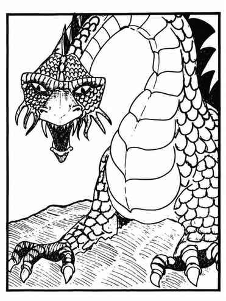

红龙 · Red Dragon（Draco Conflagratio Horriblis）
 |
|
红龙通常栖息在高山或丘陵地区，并在地下洞穴筑巢。它们极其贪婪，是邪恶龙族中最恶劣的一类，仅次于提亚马特。红龙以爪、爪、咬攻击，或喷吐火焰；火焰锥长 9 寸，底部直径 3 寸。会说话的红龙有 40% 概率能够施法；每个年龄阶段获得一个新法术：最初两个阶段为一环，接下来两个阶段为二环，第五、六阶段为三环，最后两个阶段为四环。因此古红龙可各施展两个一至四环法术。
上一节：铂金龙 · Platinum Dragon
下一节：银龙 · Silver Dragon（Draco Nobilis Argentum）